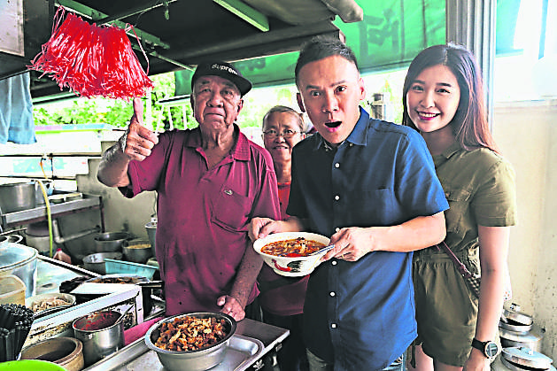

Sunday, August 02, 2020
An Affair of Love between a Couple and Sungai Petani's Local Cuisine
Although born in Sekinchan, Selangor, the talented Malaysian musician Tang Xiao Kang is more familiar with Sungai Petani, Kedah. This is because Tang's wife is from Sungai Petani and they visit her hometown every month, and he always accompanies her. Over the years, his wife's love for the local cuisine has caused his weight loss plan to repeatedly fail, leading him to sing helplessly, "Falling in love with you is not my choice!"
READ MORE